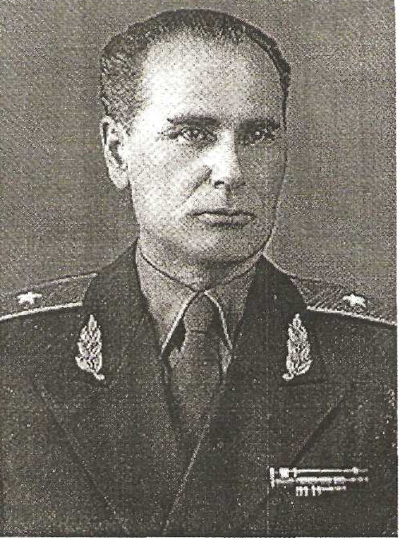

Лукин Спиридон Андрианович
Лукин Спиридон Андрианович
(14.12.1904 – 11.01.1995)
Генерал-майор Лукин Спиридон Андрианович родился в деревне Большое Байкалово Нижнеентальского сельсовета.
Закончил Нижнеентальскую школу и рано начал работать.
Участник Великой Отечественной войны. Воевал в составе Юго-Западного, Сталинградского,
Северо-Западного, Белорусского и Дальневосточного фронтов. Был контужен, обморожен, ранен.
За участие в боях и проявленный героизм и мужество С.А. Лукин был награжден двумя орденами Боевого Красного знамени,
«Отечественной войны» 1-й и 2-й степени, орденом «Красной Звезды», многими медалями.
С 1949 года С.А. Лукин служил в органах государственной безопасности СССР. В 1960 году был назначен начальником Комитета госбезопасности по Крымской области. Почетный сотрудник органов Государственной безопасности. Его характеризовали, как очень ответственного, честного и справедливого человека.
После выхода на заслуженный отдых активно участвовал в общественной жизни Крыма. Его полная биография пока закрыта по причине служебной деятельности. 12 января 1995 года Спиридон Андрианович Лукин скончался в г. Симферополе. При прощании ему были возданы особые почести: военный оркестр, почетный караул, отряд пограничников со знаменем и ружейный троекратный салют.
С 1949 года С.А. Лукин служил в органах государственной безопасности СССР. В 1960 году был назначен начальником Комитета госбезопасности по Крымской области. Почетный сотрудник органов Государственной безопасности. Его характеризовали, как очень ответственного, честного и справедливого человека.
После выхода на заслуженный отдых активно участвовал в общественной жизни Крыма. Его полная биография пока закрыта по причине служебной деятельности. 12 января 1995 года Спиридон Андрианович Лукин скончался в г. Симферополе. При прощании ему были возданы особые почести: военный оркестр, почетный караул, отряд пограничников со знаменем и ружейный троекратный салют.